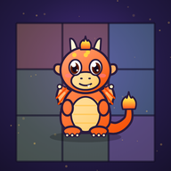

Privacy Policy
Dragodoku · by PyroDadDev · Effective 13 October 2026
Who we are
Dragodoku (“the game”) is made by PyroDadDev (“we”, “us”), published on Google Play as Dragon Developments, an independent developer based in Wales, United Kingdom. We are the controller of the game data described below. For anything about this policy or your data, email pyrodaddev@googlegroups.com.
Information kept on your device
Your whole game is saved on your device:
- your puzzle progress: daily results and times, streaks, Streak Shields, unfinished boards, practice progress and embers;
- your eggs and dragons, including any names you give them, and which one is your Companion;
- your Dragon Duels deck, record and Scales, and the styles you’ve bought for your dragons and cards;
- your Tamer name and its number, if you choose one;
- your settings: dragon fire, timer, sound, haptics and the reminder time;
- a random install code used to roll your eggs, gift codes you’ve redeemed, how many hints you’ve used today, and counters that keep ads to the limits we promise;
- whether you have bought “Remove Ads”;
- if you back up with Google: which Google sign-in the game backs up to (its email address) and when it last saved.
Only the facts listed in the next section are sent to us. Unless you back up with Google, dragon names, settings, boards, embers and your install code stay on your phone, apart from a short part of the install code that forms each dragon’s registry ID.
Uninstalling the game deletes all of this from your phone. If your phone’s Android backup is switched on, Android may also include the game’s saved data in your Google backup, so it can come back when you reinstall or set up a new phone. That backup is kept by Google in your Google account, and you can manage or delete it in your phone’s backup settings.
Rankings, leaderboards and the dragon registry (Google Firebase)
When your phone is online, the game signs in to our Firebase project with Firebase Anonymous Authentication. This creates a random player ID for your copy of the game. It is not linked to your name, email address, phone number or Google account (unless you choose to back up with Google, below), and we don’t try to identify you. The game then sends only this:
| When | What is stored | Why |
|---|---|---|
| You tap Start on one of the daily puzzles | Our server’s time when you tapped Start, kept with your anonymous player ID. | So leaderboard times are measured by our server’s clock, not your phone’s. |
| You solve one of the daily puzzles | The puzzle (date and size) and your solve time, kept with your anonymous player ID, plus an anonymous count of solve times and flawless solves for that puzzle. If you tapped Start while online, also our server’s times when you started and finished, whether the solve was flawless and how many hints you used. | To show “faster than X% of players”, count each player once, tell you your finishing order, and work out the leaderboards. |
| You choose a Tamer name (optional) | The name, its four-digit number and when you set it, kept with your anonymous player ID. The name and number are shown on the public leaderboards; your player ID never is. | To show you on the leaderboards. |
| You report a name on a leaderboard | The name and number you reported, when, and your anonymous player ID. | So names that break the rules can be hidden, with each player’s report counted once. |
| A dragon hatches, or later ascends | Its species, stage, whether it is Gilded, its serial number, what kind of egg it came from, the date and time it was registered, whether it reached Fledgling early with the optional ad boost, and your anonymous player ID. Running totals per species are updated. | To give every dragon a unique worldwide serial number, show how many of each species exist, and work out the collectors leaderboard. |
| You redeem a gift code | That the code has been used, and by which anonymous player ID, plus the dragon’s registry record. | So each code works once. |
| You share your Dragon Duels deck (optional, with a Tamer name) | Your Tamer name and number, and for up to 12 dragons in your duel deck: species, stage, whether it is Gilded and its individual strengths (not the names you gave them), with the deck’s strength and when you shared it, kept with your anonymous player ID. Other players see it when they choose to duel it. | So other players can duel your dragons. Switch off Share my deck in Dragon Duels at any time, which deletes it. |
| You duel a friend live (optional, with a Tamer name) | A room with its code, both players’ Tamer names and numbers, anonymous player IDs and hand sizes, when it was opened and joined; then each round’s called stat, and each dragon played (species, stage, whether it is Gilded and its individual strengths, never the name you gave it), and whether a player left. Only the two players can read the rounds, and a dragon only once both have played. | To play the duel between your two phones. Rooms and everything in them are deleted automatically a day after they were opened. |
| We send you an air drop or a gift | A gift code made for your anonymous player ID only, listed in your private inbox with our message. The game claims it (as above) and removes it from the inbox. Air drops go to players picked at random from those who solved a daily puzzle recently. | To give players surprise gifts with nothing to type. |
| Something goes wrong in the game (an error report) | The game’s version, your phone’s operating system and its version, the technical error message (with anything that looks like an email address or a key removed) and where in the game’s code it happened, the date and time, and your anonymous player ID as part of the report’s name. At most five reports a day. | To find and fix bugs. Reports are deleted after 30 days. |
Each dragon’s registry ID is made from your anonymous player ID and a short code from your copy of the game. Registry records can only be read by the player they belong to and by us.
Back up with Google (optional)
If you tap Back up with Google (in Settings, on the home screen, or “Played before? Restore your dragons” on first launch), Google’s sign-in sheet opens and you choose an account. The game then signs in to our Firebase project with that Google account using Firebase Authentication, which records the account’s email address, the name and profile picture link Google shares with it, its Google account ID, and when it signed in. The game never gets your Google password, contacts or anything else in your Google account, and this sign-in is used only for the backup.
The game then keeps one backup for that sign-in, updated a few minutes after you play and when you leave the game:
- a copy of everything the game saves on your phone (listed above), including dragon names, settings and your install code;
- your anonymous player ID and its sign-in key, so a restore makes the new phone the same player, with the same serial numbers, Tamer name and leaderboard history;
- the game version, how many dragons you have, your best streak, and when it was saved.
Only someone signed in with that Google account can read, restore, replace or delete the backup: other players can’t, and our dashboard doesn’t show backups. We don’t look at them unless you ask us to help with yours. To bring your dragons back on another phone, install Dragodoku there and sign in with the same Google account.
We keep a backup until you delete it. Stop backing up signs out on that phone and leaves the backup ready to restore. Delete my backup (Settings → Backup) deletes the backup and the Google sign-in record (with its email address and name) from our Firebase project straight away; the game on your phone is not affected. You can also see or remove Dragodoku’s access in your Google Account, under third-party apps and services.
The per-species totals and the daily counts are public inside the game. They contain no personal details, but each species total keeps the registry ID of the most recently registered dragon of that species, which the database uses to check serial numbers.
Firebase is provided by Google, which processes this data for us as our service provider. It also handles your IP address and basic device information to deliver the service and keep it secure. The database is hosted in Google Cloud’s London region (europe-west2). Firebase Authentication, which creates the anonymous ID, is a global service and may process data in the United States. See Privacy and Security in Firebase.
We keep these records while the game is available, because serial numbers must stay unique. You can ask us to delete yours at any time (see below).
Leaderboards (our server)
Every few minutes, a small program on a server we rent from Contabo GmbH, hosted in the European Union, reads the leaderboard data described above from our Firebase database: start and finish times, Tamer names, reports, and which species each anonymous player has registered. It works out the leaderboards and writes the top 100 of each back to Firebase, where the game reads them. The published leaderboards contain only Tamer names with their numbers and a score (a time, a number of days or a number of species), never player IDs. Players without a Tamer name never appear on them. Boards for past days are deleted once the day is over.
To do this, the program keeps a working copy on that server, kept with anonymous player IDs: the last week of daily times, Tamer names, the days each player solved the daily, which species each player has registered and which of their dragons are Gilded, and reports from the last 60 days. If you ask us to delete your data, it keeps only your anonymous player ID on a do-not-read list, so nothing of yours is read back in. Contabo provides the server to us as our hosting provider.
Names that break the rules (rude or hateful words, or someone’s real name or contact details) are hidden from the leaderboards. A name reported by three established players (who have played several timed dailies) is hidden automatically, and we can hide names ourselves. The player can then choose a new name. You can ask us to remove your Tamer name at any time.
Deleting your data
Data on your phone: uninstall Dragodoku. This deletes your progress, dragons, settings and the anonymous sign-in on that device. If you use Android backup, you can also delete the game’s backup in your phone’s backup settings.
Your Google backup: in the game, open Settings → Backup → Delete my backup. This deletes the backup and your Google sign-in record (with its email address and name) from our Firebase project at once. Uninstalling the game does not delete it.
Data in our Firebase database: email pyrodaddev@googlegroups.com with the subject “Dragodoku data deletion” and include the name and serial number shown on at least one of your dragon cards (for example “Ashoo #AAA-0042”), or your Tamer name and number (for example “Nimbus#4821”). We use it to find your anonymous player ID, then delete every dragon registry record, daily-ranking and leaderboard entry, Tamer name and report linked to that ID, any error reports, any gifts waiting in your inbox, any shared duel deck (live duel rooms are deleted within a day anyway), the working copy on our leaderboard server, and the anonymous sign-in record itself, within 30 days, and confirm by email. If you email us from the Google account you backed up with, we will delete that backup and its sign-in record too.
What is kept: the daily solver counts, which contain no IDs; the per-species totals (a total can hold the registry ID of the latest dragon of that species until the next one hatches, and we clear it if it is yours); the record that a gift code you redeemed has been used (we remove your ID from it); and the serial numbers themselves, which are never reissued. Ad data is held by Google; use the ad choices below.
Advertising (Google AdMob)
The free version shows an occasional full-screen ad between puzzles, and optional ads you can choose to watch for extra hints, to rekindle a streak, or to help a Hatchling grow into a Fledgling early. Ads are provided by Google AdMob through the Google Mobile Ads SDK. Google acts as an independent controller of the data it collects. To serve ads, limit repeats, measure performance and prevent fraud, the SDK may collect:
| Data | Examples |
|---|---|
| Device identifiers | Android advertising ID; on iPhone, the ID for vendors (Dragodoku does not ask for iPhone tracking permission) |
| Approximate location | derived from your IP address |
| Ad interactions | which ads were shown, watched or tapped |
| Diagnostics | device type, operating system, crash and performance data |
Learn how Google uses this data at How Google uses information from sites or apps that use our services, and in Google’s Privacy Policy.
Your ad choices
- UK, EEA and Switzerland: on first launch you see Google’s consent message, with the choice to consent, not consent, or manage options. Personalised ads are only shown if you agree. You can change your choice at any time in Settings → Ad privacy choices.
- Android: you can reset or delete your advertising ID in your device settings (Settings → Privacy → Ads, or Google → Ads on some devices).
- Fewer ads: the one-off “Remove Ads” purchase switches off the between-puzzle ads for good. Optional ads stay available only if you choose to watch them.
In-app purchases
“Remove Ads” is sold through Google Play or the Apple App Store, which handle payment. We never receive your payment details, only confirmation that the purchase was made, so the game can switch ads off and restore the purchase on a new device.
Reminders
If you turn on the daily reminder, your phone schedules it locally and shows it at the time you choose (and, on a day you’ve solved two to four of the five puzzles, one more at 7pm about the Perfect Day egg). No notification data is sent to us, and we don’t use push notifications. The game asks for notification permission only when you turn the reminder on.
Sharing
If you tap Share, your device’s share sheet opens with a short message (your results or your dragon) and a picture: your dragon card, a card of your day with your puzzle times, your Companion and your streak, or a card of your dragon's Ascension. The picture is made on your phone. Nothing is sent unless you choose where to send it.
International transfers
Google may process the data described here outside the UK, including in the United States. For Firebase, Google is our processor under its data processing terms, which include the safeguards UK and EU law require for these transfers. For ads, Google is an independent controller and describes its own safeguards in its privacy policy. Our leaderboard server is in the European Union, which UK law recognises as giving adequate protection.
Legal bases (UK GDPR and EU GDPR)
Rankings, leaderboards, the dragon registry, gift codes, air drops and gifts are part of the game you asked to play, and rely on our legitimate interests in running fair rankings and leaderboards and unique serial numbers, and giving players gifts, with as little data as possible. Appearing on the leaderboards is your choice: you only appear if you choose a Tamer name. The Google backup is a service you ask for when you turn it on, and we keep it to provide that service to you until you delete it.
In the UK, EEA and Switzerland, ads only store or read information on your device for advertising, and only use your data for personalised ads, if you consent. You can withdraw consent at any time as described above. Without consent, Google can show limited ads, which aren’t personalised and don’t use your device’s storage or advertising ID to choose ads. Showing those, keeping to our ad limits, counting ads and preventing fraud rely on our legitimate interest in keeping the game free and secure.
Children
Dragodoku is a general-audience game and is not directed at children under 13. We do not knowingly collect personal information from children. The game works the same way for every player: no accounts to make, only anonymous IDs (plus a Google sign-in only for players who choose to back up), and in the UK, EEA and Switzerland, personalised ads only with consent. Tamer names are optional, and the game asks players not to use real names or contact details in them. If you believe a child has provided personal information, contact us and we will help.
Your rights
Depending on where you live, you may have the right to access, correct, delete, restrict or object to the processing of your personal data, and to withdraw consent. Because the game is anonymous, we can only find your records from the dragon names and serial numbers, the Tamer name and number, or the Google account you backed up with, that you send us. Ad data is handled by Google via the links above. You can also complain to your data protection authority. In the UK that is the Information Commissioner’s Office (ico.org.uk).
Changes to this policy
If this policy changes, we will update this page and the effective date above. Significant changes will also be noted in the game’s store listing.